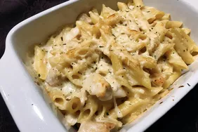

Chicken Penne Alfredo

Description
This baked chicken pasta recipe is made with penne pasta and rotisserie chicken; it is a quick version of a chicken alfredo bake. Serve with garlic bread and a green salad for a no-fuss weeknight meal.
Ingredients
- 2 cups penne pasta
- 1 tablespoon butter
- 1 clove garlic, minced
- 1 1/2 tablespoons all-purpose flour
- 1/2 cup 1% milk
- 1/2 cup heavy cream
- 1 cup freshly grated Parmigiano-Reggiano cheese
- 1 pinch ground nutmeg
- 1 cup cubed rotisserie chicken
Steps
- Bring a large pot of lightly salted water to a boil. Add penne and cook, stirring occasionally, until tender yet firm to the bite, about 11 minutes.
- Preheat the oven to 375 degrees F (190 degrees C).
- Melt butter in a saucepan over medium heat and cook garlic for 1 minute. Whisk in flour until a paste forms. Pour in milk and cream, whisking continuously until smooth. Stir in 3/4 of the Parmigiano Reggiano cheese and nutmeg. Add drained penne pasta and cooked chicken; stir to combine. Pour mixture into a casserole dish. Sprinkle with remaining cheese.
- Bake in the preheated oven until cheese is melted, 10 to 12 minutes.